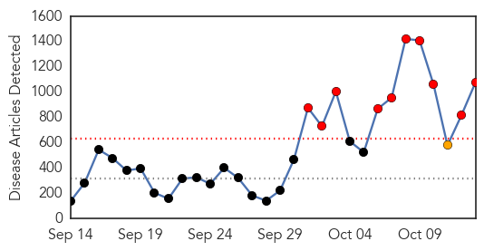
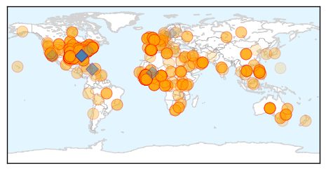

Ebola
30-Day Web Trend
10 alerts, 1 warnings

30-Day Twitter Trend
3 alerts, 7 warnings
Article Locations
Article Confidences
Top Articles:
- 1.000
- Worst Ebola outbreak on record tests global response, Others news, Health News, AsiaOne YourHealth
- 1.000
- 41 UN Staffers Under Ebola Observation
- 1.000
- UPDATE: Health care workers monitored after Ebola case
- 1.000
- Worst Ebola outbreak on record tests global response - World
- 1.000
- SLLG Atlanta-MRU African States Declare War Against Ebola
- 1.000
- Latest Ebola News: Second person tests positive for Ebola in Texas
- 1.000
- Latest Ebola News: CDC Director blames a 'breach in protocol' for transmission of the Ebola virus in new Texas patient
- 1.000
- Texas nurse infected with Ebola identified
- 1.000
- Health care workers monitored after Ebola case; CDC urges all US hospitals to 'think Ebola'
- 1.000
- Worst Ebola outbreak on record tests global response
- 1.000
- Ebola crisis: US needs to rethink infection controls says health official; US rejects travel ban on those from West Africa
- 1.000
- Health Officials Reviewing Ebola Treatment Procedures at Dallas Hospital
- 1.000
- Observer
- 1.000
- Texas nurse who contracted Ebola repeatedly visited Liberian patient's room
- 1.000
- First US Ebola infection result of 'protocol breach'
- 1.000
- Coordinated efforts helped fight HIV/AIDS; Ebola kills more quickly, though hospitalization betters odds of survival
- 1.000
- ‘Protocol breach’ led to U.S. Ebola spread
- 1.000
- 2nd Ebola patient is nurse, 26
- 1.000
- Ebola outbreak 'most serious health crisis in modern times'
- 1.000
- Chris Brown claims Ebola is a 'form of population control'
- 1.000
- Ebola UK: What happens in hospitals and GP surgeries if a suspected patient walks in?
- 1.000
- Ebola UK: Screening starting at Heathrow Airport on Tuesday
- 1.000
- Ebola UK: NHS staff 'panicked' after suspected Ebola cases
- 1.000
- Ebola outbreak: We’re not doing enough to stop the spread of the virus, President Obama warns UN General Assembly
- 1.000
- Ebola Panic The New Normal As Outbreak Spreads, Death Count Rises
- 1.000
- Dallas healthcare worker contracts first case of Ebola within United States
- 1.000
- Ebola risk ‘still low’ in Bangladesh
- 1.000
- CDC under fire for 'scapegoating' Texas nurse infected with Ebola
- 1.000
- CDC under fire for 'scapegoating' Texas nurse infected with Ebola
- 1.000
- Boston patient does not appear to have Ebola
- 1.000
- Ebola outbreak: U.S. officials launch review of treatment procedures
- 1.000
- Ebola outbreak: U.S. officials launch review of treatment procedures
- 1.000
- Ebola outbreak: U.S. officials launch review of treatment procedures
- 1.000
- Possible Ebola case hits Chile
- 1.000
- Braintree Patient at Beth Israel Does Not Have Ebola
- 1.000
- CDC to U.S. hospitals
- 1.000
- U.S. needs to rethink Ebola infection controls: CDC chief
- 1.000
- Ebola crisis: US needs to rethink infection controls says health official; US rejects travel ban on those from West Africa
- 1.000
- Health officials urge hospitals to 'think Ebola'
- 1.000
- Ottawa patient tests negative for ebola — officials
- 1.000
- Texas health worker becomes first person to contract Ebola in U.S.
- 1.000
- First US Ebola infection result of 'protocol breach'
- 1.000
- Ebola outbreak: Get up to speed with the latest developments
- 1.000
- Ebola outbreak: Get up to speed with the latest developments
- 1.000
- CDC: Breach in protocol led to Ebola diagnosis
- 1.000
- Russia to continue fight against Ebola — Putin
- 1.000
- Dallas Presbyterian Hospital Health Care Worker Becomes First U.S.-Acquired Ebola Case BioNews Texas
- 1.000
- CHRONOLOGY-Worst Ebola outbreak on record tests global response
- 1.000
- Ebola in America: Timeline of the Deadly Virus
- 1.000
- CDC urges hospitals to 'think Ebola'
Showing top 50 articles...
Top Tweets:
- 1.000
- Ebola est une maladie virale aiguë sévère.
- 0.998
- - This article refers to the Ebola-Reston virus. The outbreak in West Africa is the Ebola-Zaire virus.
- 0.974
- Ebola:Poem For The Living (animated) https://t.co/C5SQyTCF1a endebolanow ebola westafrica sierraleone liberia guinea senegal nigeria
- 0.907
- Le virus Ebola a été identifié en Afrique centrale, suite à une épidémie qui a affecté le Soudan et la RDC, dans les années 70.
- 0.900
- “‘Men anpil, chay pa lou.’ (Many hands make the load lighter). Together we can help fight the Ebola virus disease” –Ruthly François
- 0.870
- Ebola virus is not spread by any food grown or legally purchased in the United States.
- 0.868
- technical report on entry and exit screening measures to prevent and control Ebola virus disease http://t.co/suohEvrD1z
- 0.846
- Ebola is killed with hospital-grade disinfectants (like household bleach). Ebola on dry surfaces like doorknobs can (1/2)
- 0.808
- by direct contact with blood or body fluids of a person with Ebola. Some symptoms are similar, but flu usually (2/3)
- 0.807
- Accrd to Ebola transmission rate remains high in WestAfrica. In Liberia cases double every 15-20 days. http://t.co/sm1YqH73o9
- 0.788
- RT: CDC continues to work hard w/ many others to reduce Ebola risk to Americans by ending outbreak in W. Africa. More: http:…
- 0.788
- RT: CDC continues to work hard w/ many others to reduce Ebola risk to Americans by ending outbreak in W. Africa. More: http:…
- 0.787
- The enemy is a virus and there is no blame to place on anyone on the frontlines of the Ebola fight.
- 0.770
- Ebola patients are only contagious when symptomatic; transmission requires close contact with body fluids.
- 0.763
- LIVE: @KansasUniv hospital testing patient for Ebola http://t.co/ZNZQuQxj55
- 0.761
- Flu is a contagious respiratory illness that can be spread to others up to 6 ft away. Ebola can only be spread (1/3)
- 0.745
- Ebola doesn’t spread from people who aren’t sick. If someone has been exposed but isn’t sick, they can’t spread it to others.
- 0.744
- RT: The enemy is a virus and there is no blame to place on anyone on the frontlines of the Ebola fight.
- 0.744
- RT: The enemy is a virus and there is no blame to place on anyone on the frontlines of the Ebola fight.
- 0.730
- CDC continues to work hard w/ many others to reduce Ebola risk to Americans by ending outbreak in W. Africa. More: http://t.co/acs6ce14yk
- 0.719
- Ebola is not a respiratory disease like the flu, so it is not spread through the air. http://t.co/1OsrUzqssF
- 0.717
- Ebola spreads by contact w/ sick person’s blood/body fluids, contact w/ contaminated objects, or infected animals.
- 0.711
- AFD Blog `@WHO Issues Ebola Home Care Advice For Sierra Leone' http://t.co/4jB6294wns
- 0.667
- Liberian nurses threaten strike amid Ebola epidemic http://t.co/ATorCPgE9i
- 0.659
- RT: Rep. @PeteSessions tells, no Ebola travel ban is like "aiding & abetting" the virus. Thoughts? http://t.co/…
- 0.649
- This EbolaOutbreak is “unquestionably the most severe acute public health emergency in modern times,” Dr. Margaret Chan, @WHO Director
- 0.625
- Unlike respiratory viruses, Ebola not considered airborne & is not easily spread by sneezes or coughs. But droplets (1/3)
- 0.593
- RT: Second ebola hc assoc. illness in Dallas after case in Spain. Guidelines are important but NOT sufficient. Need training …
- 0.588
- CDC head warns additional Ebola cases possible in coming days http://t.co/SV7X6zvFUy
- 0.556
- Canadian Ebola vaccine trials begin http://t.co/CQPJilWRcN
Unknown
30-Day Web Trend
0 alerts, 0 warnings

30-Day Twitter Trend
1 alerts, 0 warnings

Article Locations

Article Confidences
Top Articles:
- 0.993
- Respiratory Virus, Enterovirus 68, Claims Michigan Toddler's Life After Month-Long Battle : News : Headlines & Global News
- 0.986
- Fayetteville, Breaking News, Newspaper, Lincoln County, Park City, Flintville, Petersburg, Redstone, Huntsville, Hazel Green, Goodman, Frito-Lay, Stonebridge, Elk River, Distillery, Motlow, Fair in Te
- 0.980
- No new Marburg case in Uganda
- 0.975
- Meningococcal kills toddler in north Qld
- 0.951
- Pregnant women urged to protect their unborn child by having a flu jab
- 0.946
- Neurologic Deficits in Children Preceded by Febrile Illness
- 0.937
- EIGHT infants now tested positive for tuberculosis in Texas hospital
- 0.917
- California county confirms first 3 cases of enterovirus D68
- 0.917
- Chicago Tribune
- 0.917
- Chicago Tribune
- 0.917
- Chicago Tribune
- 0.917
- Chicago Tribune
- 0.917
- Chicago Tribune
- 0.917
- Chicago Tribune
- 0.917
- Chicago Tribune
- 0.917
- Chicago Tribune
- 0.917
- Chicago Tribune
- 0.917
- Chicago Tribune
- 0.917
- Chicago Tribune
- 0.917
- Chicago Tribune
- 0.917
- Chicago Tribune
- 0.917
- Chicago Tribune
- 0.917
- Chicago Tribune
- 0.917
- Chicago Tribune
- 0.917
- Chicago Tribune
- 0.917
- Chicago Tribune
- 0.917
- Chicago Tribune
- 0.917
- Chicago Tribune
- 0.917
- Chicago Tribune
- 0.917
- Chicago Tribune
- 0.917
- Chicago Tribune
- 0.917
- Chicago Tribune
- 0.917
- Chicago Tribune
- 0.917
- Chicago Tribune
- 0.906
- 12 latent tuberculosis cases found at Orleans high school
- 0.866
- News, Information and Connections for Action
- 0.866
- News, Information and Connections for Action
- 0.866
- Hurricane Gonzalo forms near northern Leeward Islands
- 0.866
- Ashishkumar Chauhan, CEO of BSE Ltd, poses for a picture at the Reuters Global Climate Change Summit in Mumbai
- 0.756
- Michigan Toddler Madeline Reid Dies From the Mysterious Virus
- 0.741
- Immunize Nevada kicks off campaign
- 0.732
- ‘Preventable' encephalitis is causing havoc in Poorvanchal region
- 0.729
- Estimation of Cigarette Smoking–Attributable Morbidity in the United States
- 0.716
- Runner Tested for Rabies after Rabid Bat Lands on Him During 5k Fun Run
- 0.687
- Dr. Paul Boger Now Accepts Patients from Jamestown, NY Looking to Treat Gum Disease with Advanced Laser Gum Surgery
- 0.684
- Humans pass deadly virus to gorillas
- 0.671
- Conjunctivitis cases soar in Chennai
- 0.667
- Chadrad.com
- 0.615
- 2 new suspected Marburg cases put in isolation.
- 0.596
- Union Government Reluctant to Appoint Mid-level Medical Professionals
Showing top 50 articles...
Top Tweets:
- 0.642
- no puedo lidiar con la sensaci√≥n que deja en mi, el darme cuenta que voy por el ultimo episodio del ultimo season de la serie üíî
- 0.573
- soy consistente, en no saber que quiero, y quererlo todo